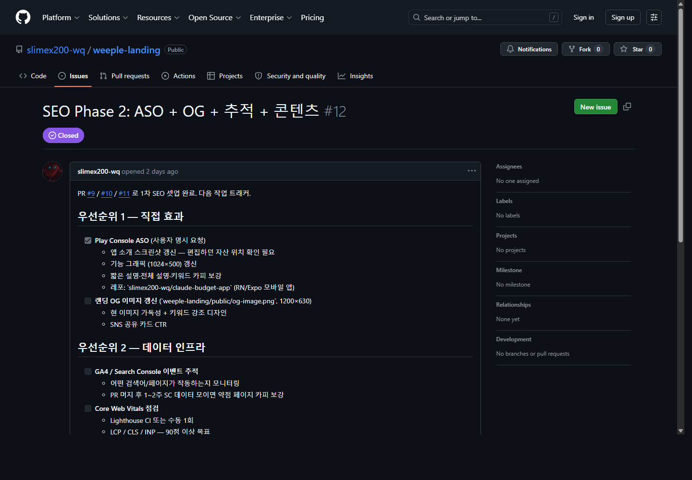
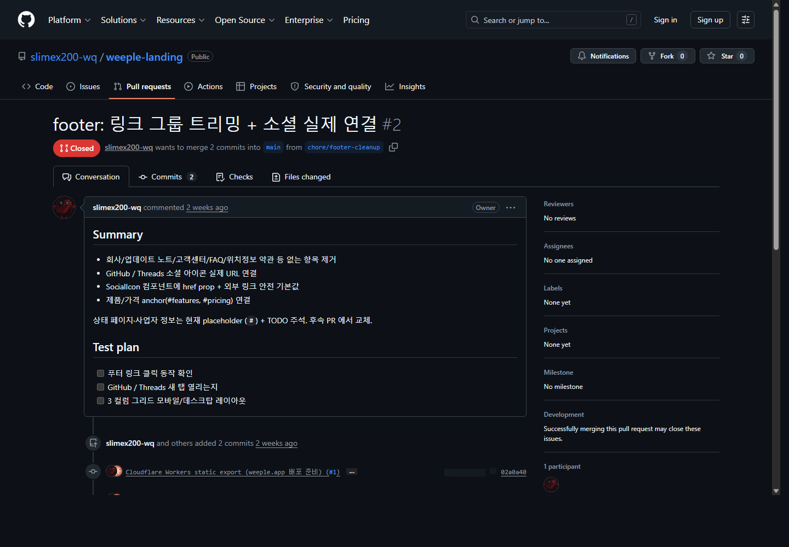

하네스 먼저 읽기
idle

드래그로 이동 · 더블클릭 반응 · 우클릭 리셋
사람에게 회사 규칙을 알려주듯, AI에게도 프로젝트를 이해하는 입구가 필요하다.
AI가 매번 다른 답을 하는 이유와 도구별 입구 차이를 설명한다.
Skill, MCP, OMC/OMX와 AGENTS, CLAUDE, DESIGN의 역할을 보여준다.
Issue는 작업 카드, PR은 검수 공간이라는 식으로 비개발자 언어로 설명한다.
각자 프로젝트의 상태, 확인 방법, 금지 결정을 한 장 워크시트에 적는다.
매번 배경을 다시 말하고, AI가 기억한다고 믿어야 한다.
AI가 먼저 읽는 프로젝트 지도를 만들면 도구가 바뀌어도 기준은 남는다.
빠르게 묻고 답하기 좋지만, 내 프로젝트 파일과 실행 환경은 약하다.
파일, 브라우저, 터미널을 한곳에서 다루며 작업 흐름을 오래 가져간다.
코드 편집과 리뷰에 강하고, 개발자 작업 흐름에 가장 가깝다.
테스트, 빌드, git, 자동화에 강하다. 대신 맥락 문서가 더 중요하다.
Clawd 같은 도구의 상태 표시, 훅, 테마 구조를 보고 내 작업 방식에 맞게 응용할 수 있다.
코드 라이선스와 이미지/캐릭터 라이선스는 다를 수 있다. 쓸 때는 범위를 확인한다.
AI에게 특정 작업 방식을 알려주는 절차서다. 예: 코드 리뷰 방법, 발표자료 만드는 방법, 리서치 방식.
AI가 외부 도구와 데이터에 접근하게 하는 연결 규격이다. 예: GitHub, Figma, DB, 브라우저.
Skill은 행동 규칙, MCP는 도구 연결이다.
작업 상태, 계획, 로그를 남겨 다음 세션에서도 이어갈 수 있게 한다.
plan, team, review, verify 같은 작업 모드를 만들어 AI가 덜 즉흥적으로 움직이게 한다.
테스트, 빌드, 리뷰, 완료 보고를 반복 가능한 절차로 묶는다.
AI가 어떻게 움직일지 정하는 실행 엔진이다. 모드, 훅, 팀, 상태 저장을 담당한다.
이 프로젝트가 무엇인지 알려주는 지도다. 제품 사실, 결정, 검증, 취향을 담당한다.
Codex, Claude, Gemini가 공통으로 읽을 프로젝트 출입문
Claude/OMC가 같은 출입문을 따르게 하는 얇은 연결 문서
AI가 화면을 만들 때 지켜야 할 제품 톤과 금지 패턴
This repo is used by Codex/OMX and Claude/OMC. Follow your local runtime rules first.
Before changing files, read:
PROJECT_STATE.md - current status and next workCHECKS.md - verification commands and platform notesDECISIONS.md - product, native, payment, auth, safety decisionsGITHUB_WORKFLOW.md - branch, issue, PR, sync rulesDESIGN.md - visual and UI source of truthFollow AGENTS.md.
This file is only a Claude/OMC entrypoint. Keep shared project facts in:
PROJECT_STATE.mdCHECKS.mdDECISIONS.mdGITHUB_WORKFLOW.mdFor visual work, read DESIGN.md.
Living spec: mockup/c1-feature-map.html is the visual ground truth.
Anti-Slop:
accent: '#0EA5A0' coral: '#FF6F61' glassBg: 'rgba(255,255,255,0.18)' font: Pretendard + Geist Mono
현재 어디까지 했고, 다음에 무엇을 해야 하는지
작업이 끝났다고 말하려면 무엇을 돌려야 하는지
되돌리면 안 되는 선택과 그 이유
AI와 사람이 같이 보는 작업 카드
원본을 망치지 않고 실험하는 별도 작업선
변경 내용을 합치기 전에 검수하는 공간
작업이 진짜 끝났는지 확인하는 증거
AI가 길을 잃지 않게 잡아주는 작업 안전장치
AI가 판단하기 전에 읽어야 하는 프로젝트 맥락
다음 할 일을 GitHub Issue에 고정하면, AI도 사람도 같은 우선순위를 본다.

변경 이유, 테스트 계획, 리뷰 상태를 한 화면에 남기면 “왜 이렇게 됐지?”를 줄일 수 있다.

AGENTS.md에 “무엇을 먼저 읽을지”만 적는다.
상태, 검증, 결정, 디자인 기준을 각각 전용 문서로 나눈다.
AI에게는 긴 설명보다 읽을 순서가 더 중요하다.
AI가 제일 먼저 읽을 공통 목차
현재 상태, 다음 작업, 막힌 점
완료를 증명하는 명령어와 수동 확인
되돌리면 안 되는 결정과 이유
제품 톤, 금지 패턴, 시각 검증 기준
AI에게 맡길 다음 작업 카드 하나
하네스 문서를 먼저 읽고 작업해줘.
필요한 변경만 하고,
확인 결과까지 알려줘.
좋은 결과는 더 긴 프롬프트보다, 더 좋은 작업 시스템에서 나온다.